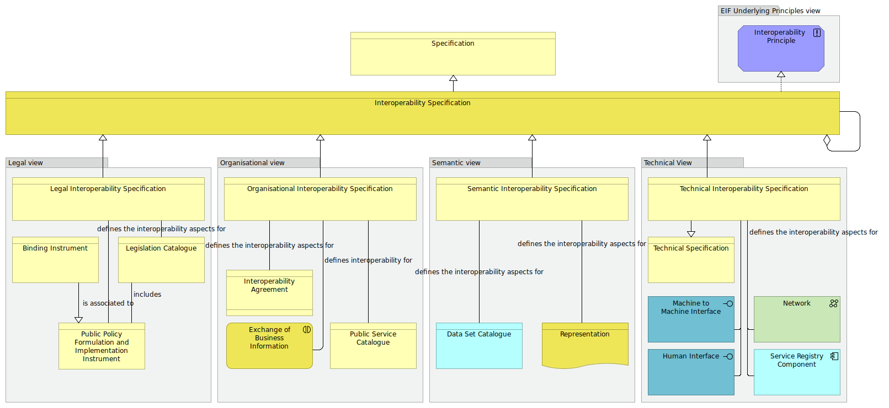

Interoperability Specification viewpoint
(
)

The Interoperability specification viewpoint models the most salient Architecture Building Blocks that shall be considered when providing interoperability specifications. It provides an overview of Architecture Building Blocks from the different views, and depicts them as a taxonomy of interoperability specifications. Each EIRA© view has Architecture Building Blocks that support interoperability. Each view’s interoperability specifications serve to define the interoperability aspects of catalogues and registries, addressing both their contents and the respective catalogue or registry as a whole. Given the linked nature of the EIRA©’s views, the interoperability specifications from all views can be considered to affect each individual catalogue or registry. However, the focus in each case is kept within the specific view to best capture the level of detail that each view’s specifications deal with. Narrative: An [Interoperability Specification] is a [Specification] and can be composed of other [Interoperability Specifications]. It exists at the four levels of interoperability defined in the European Interoperability Framework. This viewpoint selects Architecture Building Blocks from the five different views highlighting the interoperability specification related Architecture Building Blocks of the EIRA: 1. The selected Architecture Building Blocks of the legal view shows that a [Legal Interoperability Specification] is associated to a [Public Policy Formulation and Implementation Instrument], of which a [Binding Instrument] is a specialisation, and defines the interoperability aspects for a [Legislation Catalogue]. 2. The selected Architecture Building Blocks of the Organisational view shows that an [Organisational Interoperability Specification] describes the interoperability aspects for an [Interoperability Agreement], a [Public Service Catalogue] and/or the [Exchange of Business Information]. 3. The selected Architecture Building Blocks of the semantic view shows that a [Semantic Interoperability Specification] defines the interoperability aspects for [Data Set Catalogues] as well as the interoperability aspects for [Representations]. 4. The selected Architecture Building Blocks of the Technical view shows that a [Technical Interoperability Specification] is a [Technical Specification], it defines the interoperability aspects of a [Machine to Machine Interface], a [Human Interface], a [Network] and/or a [Service Registry Component]. The [Service Registry Component] provides a mechanism to register technical services within a catalogue to be discovered by others. 5. The selected building block of the EIF Underlying Principle view show that [Interoperability Specifications] realise [Interoperability Principles], the general intended properties used to achieve interoperability. The interoperability Specifications can be used to define the interoperability aspects for any of the Architecture Building Blocks.
dct:title
Interoperability Specification Viewpoint
Data Set Catalogue
Semantic Interoperability Specification
Representation
Public Service Catalogue
Exchange of Business Information
Interoperability Agreement
Organisational Interoperability Specification
Public Policy Formulation and Implementation Instrument
Legislation Catalogue
Binding Instrument
Legal Interoperability Specification
Specification
Interoperability Specification
Human Interface
Machine to Machine Interface
Network
Technical Interoperability Specification
Technical Specification
Service Registry Component
Interoperability Principle